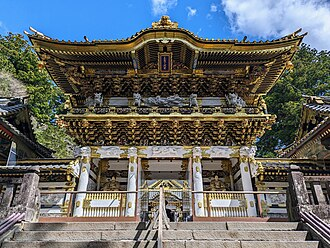
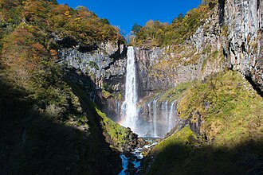
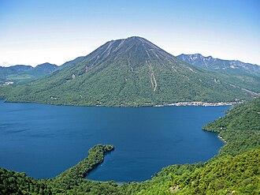

← 各地のご案内へ戻る
日光ギャラリー
世界遺産の社寺と自然景観を中心に、日光の魅力を紹介します。
日光の社寺景観
山あいに広がる歴史ある社寺エリアの雰囲気を楽しめます。
日光東照宮 陽明門

日光観光の中心となる世界遺産で、彫刻の美しさが見どころです。
華厳滝

迫力ある滝の景観が魅力で、四季ごとに異なる表情を見せます。
中禅寺湖

湖畔ドライブや遊覧と合わせて自然を満喫できるエリアです。
画像出典: Wikimedia Commons